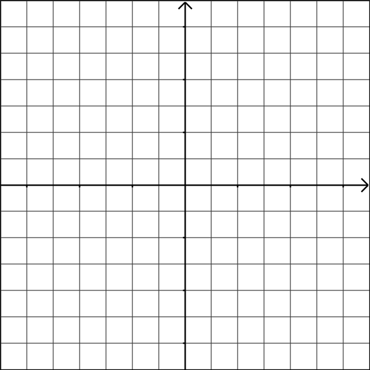
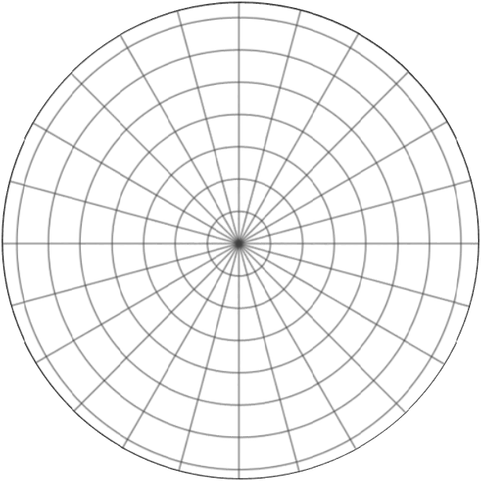
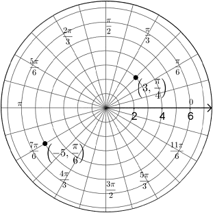

Polar Coordinates
Up to this point in your studies of mathematics, you have always dealt with equations, functions and graphs in the Cartesian, or rectangular, coordinate system. Typically, this means using the variables \(x\) and \(y\) to represent horizontal and vertical distances. We define functions in terms of \(y=f(x)\), meaning \(y\) is a function of \(x\). If we look at a grid on the \(xy\)-plane, we see a collection of rectangles (which is why we often refer to this as the rectangular coordinate system).
In contrast, polar coordinates typically use the variables \(r\) for the distance from the origin and \(\theta\) for the angle of rotation in standard position (positive rotation is counterclockwise, starting at the positive x-axis). The following graphs illustrate the two coordinate systems.
| Graph | Description |
|---|---|
|  |
The rectangular coordinate system is defined by horizontal and vertical distances, creating a rectangular grid. We know that a \(+x\) value represents a distance to the right while a \(-x\) value represents a distance in the opposite direction. Similarly \(+y\) is a distance up while \(-y\) is a distance in the opposite direction. We define a point in the Cartesian coordinate system as an \((x,y)\) coordinate, which tells use its location on the rectangular grid. |
|  |
The polar coordinate system consists of concentric circles expanding outward from the origin, or pole, and lines corresponding to various angles. The radius of the circles represent distance from the pole and the lines represent angles of rotation from the positive \(x\)-axis. We define a point in the polar coordinate system as an \((r, \theta)\) coordinate. If \(r \gt 0\) then the point is located in the direction of \(\theta\), but if \(r \lt 0\) then the point is located in the opposite direction. The sign of \(\theta\) represents the direction of rotation, counterclockwise or clockwise. For example, the coordinates \((3,\frac{\pi}{4})\) would locate a point in the first quadrant that is 3 units away from the origin at an angle of \(\frac{\pi}{4}\). The coordinates \((-5, \frac{\pi}{6})\) would locate a point in the 3rd quadrant that is 5 units away from the origin in the direction opposite \(\frac{\pi}{6}\). |
The following graph shows the location of the points \((3,\frac{\pi}{4})\) and \((-5,\frac{\pi}{6})\) on the polar coordinate plane.
Example #1: Which of the following coordinates represent the same point as \((4,-\frac{\pi}{2})\)?
- \((4,\frac{5\pi}{2})\)
- \((-4,-\frac{\pi}{2})\)
- \((-4,-\frac{3\pi}{2})\)
- \((4,\frac{7\pi}{2})\)
- \((4,-\frac{5\pi}{2})\)
- \((-4,\frac{\pi}{2})\)
The point \((4,-\frac{\pi}{2})\) is located 4 units along the negative \(y\)-axis because the \(-\frac{\pi}{2}\) rotates clockwise. If you chose the coordinates for c, d, e, and f then you would be correct. All these coordinates represent the same point. The coordinates for a and b represent a point that is 4 units along the positive \(y\)-axis, so they would be incorrect.
Converting Coordinates
We can convert polar coordinates to rectangular coordinates using the following equations.
\[x=r\cos\theta\] \[y=r\sin\theta\]Example #2: Express the polar coordinate \((-7,\frac{2\pi}{3})\) as an equivalent rectangular coordinate.
Using the above equations, we get \(x=-7\cos\left(\frac{2\pi}{3}\right)=-7\left(-\frac{1}{2}\right)=\frac{7}{2}\) and \(y=-7\sin\left(\frac{2\pi}{3}\right)=-7\left(\frac{\sqrt{2}}{2}\right)=-\frac{7\sqrt{2}}{2}\). The resulting rectangular coordinate is \(\left(\frac{7}{2},-\frac{7\sqrt{2}}{2}\right)\). Note that this is the point in the 4th quadrant that matches the location of the given polar coordinate.
We can convert from rectangular coordinates to polar coordinates using the following equations. Note that there are infinitely many ways to express a polar coordinate if we can rotate around the unit circle forever. However, there are only two if we limit \(\theta\) to the interval \([0,2\pi)\).
\[x^2+y^2=r^2\] \[\tan\theta = \frac{y}{x}\]Example #3: Express the rectangular coordinates \((-8,8\sqrt{3})\) as a polar coordinate with \(0 \le \theta \lt 2\pi\) for (a) \(r \gt 0\) and (b) \(r \lt 0\).
Let's first find the possible values of \(r\).
\[\begin{align*} x^2+y^2 &= r^2 \\ (-8)^2+(8\sqrt{3})^2 &= r^2 \\ 64 + 192 &= r^2 \\ 256 &= r^2 \\ \pm 16 &= r \end{align*}\]Now let's find the possible values of \(\theta\).
\[\begin{align*} \tan\theta &= \frac{-8\sqrt{3}}{8} \\ \tan\theta &= -\sqrt{3} \\ \theta &= \frac{2\pi}{3},\frac{5\pi}{3} \end{align*}\]Now we just have to match the radius with the angle. The given point is in the 2nd quadrant, so the positive radius must go with the 2nd quadrant angle and the negative radius must go with the opposite angle. Therefore, we get the coordinates \(\left(16,\frac{2\pi}{3}\right)\) and \(\left(-16,\frac{5\pi}{3}\right)\).
The following video summarizes how we can plot polar coordinates and how we can convert coordinates between polar and rectangular.